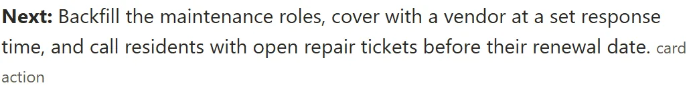

A practical view of how I evaluate property performance, identify operating risks, prioritize regional action, and connect on-site execution to asset and ownership objectives.
This fictional 14-community portfolio brings together the two disciplines that shape how I approach property management: hands-on understanding of property operations and the analytical discipline I developed through business intelligence.
Kestrel Valley is fictional. All operating and financial data are synthetic; the examples demonstrate a management approach, not actual property results.
The regional manager's market position page: the answer comes first, then the figures, the next step and the three calls for the month.
One portfolio. Four levels of accountability.
The same operating environment looks different depending on the decision being made. Regional leadership is responsible for execution across communities; asset management evaluates property-level financial performance and strategy; ownership weighs portfolio results, capital, cash flow, and risk. Each community's property manager is responsible for execution on site, and the regional view opens each community's own page.
Property management
Community execution
Units, leases, make-ready turns, work orders, delinquency, and spending against the community's own plan.
Regional operations
Property execution
Leasing, renewals, staffing, maintenance, resident experience, and community-level performance.
Asset management
Property economics
Revenue, expenses, NOI, budgets, capital projects, occupancy, and debt considerations.
Ownership
Portfolio outcomes
Cash after debt service, capital allocation, risk exposure, and investment-level decisions.
Property management experience, expanded through business intelligence.
Operational foundation
My experience in property management established a practical understanding of how communities operate, how teams perform, and how operational decisions affect residents and financial results.
Analytical expansion
My subsequent work in business intelligence expanded that perspective. I developed the ability to structure complex information, establish meaningful performance measures, identify patterns and underlying issues, and translate analytical findings into actionable business intelligence.
Kestrel Valley brings those capabilities together in a simulated multifamily portfolio. It demonstrates how I evaluate operational performance, assess financial implications, prioritize management attention, and connect property-level execution with broader business objectives. Analysis informs management; it does not manage a property on its own.
The portfolio and its results are fictional. The management experience described elsewhere on this site is my actual professional background; this project is a constructed demonstration of how I apply analytical thinking to property-management decisions.
How I work through a portfolio issue.
A variance is a starting point, not a diagnosis. I want to understand what changed, whether the movement is meaningful, what is contributing to it, which level of the organization can influence it, and how the response will be evaluated.
1
See the signal
Identify a meaningful movement in operating, resident, market, or financial performance.
2
Establish context
Compare the result with budget, market conditions, prior periods, and relevant property characteristics.
3
Test the explanation
Separate the visible symptom from the factors that may be driving it; distinguish evidence from assumption.
4
Assign the response
Match the action to the level that can influence the outcome: site, regional, asset management, or ownership.
5
Review the result
Set a measurable follow-up so the team can determine whether the intervention changed the outcome.
The point is not to produce more reporting. It is to improve the quality, timing, and accountability of management decisions.
Four perspectives. One operating picture.
Effective portfolio oversight requires moving between levels without losing the connection between them. A site-level issue can become a regional execution priority, an asset-level budget decision, and an ownership-level capital or risk consideration.
Property management
Execution at one community
The property manager view starts from one community and asks what needs action this month: which vacant units are not ready, which work orders are past target, which leases are ending without a renewal, and where spending is running over plan.
Questions it asks
Which of this community's headline measures are over target this month?
Which vacant units are not ready to rent, and when will each turn be finished?
Which work orders are past target, and which residents need a call back?
Which leases end in the next 60 days with no renewal signed?
Indicators
Leased · 60-day exposure (forecast) · Vacant units not ready · Work orders past target · Leases ending without renewal · Controllable expenses vs plan
Management output
This month's three priorities for the community, each with a next step for the site team.
Regional operations
Execution across communities
The regional view is about consistency and execution: which communities need attention, where operating standards are slipping, how staffing and service affect leasing and retention, and where the next management intervention will have the greatest impact.
Questions it asks
Which communities are diverging from market, budget, or their own recent performance?
Are leasing, renewal, maintenance, and staffing issues connected?
Is a problem isolated to one site or appearing across the portfolio?
What should the regional team ask the property manager to address first?
Indicators
Occupancy · Leasing pace · Lead response · Renewals · Work-order performance · Staffing · Resident feedback
Management output
A short list of priority communities, a clear operating question for each, an accountable owner, and a follow-up measure.
Asset management
Financial performance and property strategy
The asset view connects operating performance to the property's financial plan. It examines revenue, expenses, NOI, occupancy, capital needs, and debt considerations so that a performance gap can be evaluated in terms of both its operating drivers and its financial implications.
Questions it asks
Where is actual performance diverging from budget or underwriting?
Which operating factors are affecting revenue, expenses, or NOI?
Is the issue best addressed through execution, revised assumptions, or capital investment?
Which capital decisions have a defensible operating and financial rationale?
Indicators
Revenue · Expenses · NOI · Budget variance · Occupancy · Capital priorities · Debt metrics
Management output
A defensible view of performance, the drivers of variance, potential remedies, and the trade-offs that require a decision.
Ownership
Portfolio outcomes and capital allocation
The ownership view steps back from the daily operating detail to evaluate portfolio outcomes: cash after debt service, asset-level contribution, capital requirements, debt exposure, and where management attention or investment may be needed.
Questions it asks
Which assets are contributing to or weakening portfolio performance?
What does operating performance mean for cash after debt service?
Where are capital needs, debt timing, or risk concentrated?
Which decisions require ownership direction rather than another site-level action?
Indicators
Portfolio contribution · Cash after debt service · Capital needs · Debt coverage · Debt maturity · Asset risk
Management output
A clear view of portfolio implications, decision points, capital trade-offs, and issues that need escalation.
Featured operating scenario · Synthetic data
Sumac Hollow: when a service issue becomes a retention issue.
In the simulated portfolio, Sumac Hollow's renewals were 6.4 percentage points below its local market between September 2025 and June 2026. During the same period, average repair time increased from 1.8 to 6.4 days while maintenance positions remained vacant. Within this constructed scenario, the analysis identifies the maintenance coverage and service delay as the supported explanation for the renewal gap.
The performance gap
Renewals: 6.4 percentage points below the local market.
A service-capacity issue may be undermining the resident experience at the point when renewal decisions are being made.

What the management response should address.
At the property
Restore maintenance coverage, address the oldest open work orders, and communicate with residents who have unresolved service requests before their renewal decisions.
At the regional level
Provide temporary vendor coverage with a defined response expectation, set a short review cadence, and verify that open-ticket age and repair times are improving.
At the asset / ownership level
Evaluate the cost of restoring service capacity against the potential cost of continued resident loss, and ensure the operating plan reflects the resources needed to protect retention.
The important step is connecting the operating condition to the resident and financial consequence, then assigning a response at the level that can actually change it.
Other portfolio signals. Different management responses.
Synthetic data
Briar Spur Townhomes
Staffing and lead response
Signal
Leasing staffing was at 39% of plan, while lead response time increased from 2.2 to 22.4 hours.
Interpretation
The combination points to a capacity and execution issue that may be affecting the community's ability to convert interest into leases.
Management implication
Review coverage, establish lead-response ownership and service expectations, and monitor response time alongside tour and conversion performance.
Synthetic data
Kettle Ridge
Capital work and resident retention
Signal
By October 2026, occupancy was 5.6 percentage points above the local market. In the synthetic scenario, buildings with roof and HVAC upgrades had renewal rates 15.2 percentage points higher than buildings still awaiting the work.
Interpretation
The pattern raises a capital-sequencing question: whether completed improvements are associated with stronger resident retention and where the next phase may provide the most value.
Management implication
Evaluate project cost, building condition, resident impact, and the observed renewal difference before prioritizing the next phase. Do not state that the upgrades alone caused the difference.
Synthetic data
Harrow Glen
Distinguish volume from deterioration
Signal
Work-order volume increased from June to July 2024.
Interpretation
The increase tracked move-in volume; repair times, resident ratings, and survey scores did not deteriorate in the same period.
Management implication
Normalize demand against move-ins and check service outcomes before treating the count increase as an operating failure. This is an example of avoiding a false alarm.
Synthetic data
Ridgeback Lofts
Know when the evidence is insufficient
Signal
NOI was 7.9% below budget between October 2024 and April 2025.
Interpretation
The available evidence does not establish a sufficiently supported cause. Higher site costs are a possible explanation, but the evidence does not justify presenting that as the answer.
Management implication
Break the variance into revenue, expense, timing, and one-time items; confirm the underlying records; and avoid prescribing a remedy before the drivers are understood.
Property-level execution has portfolio-level consequences.
A regional priority is not complete until its financial significance is understood. The asset and ownership views connect community operating conditions to plan performance, NOI, cash after debt service, capital requirements, and debt considerations.
below NOI plan
12 of 14 communities
aggregate NOI shortfall to plan
$830K
cash after debt service
$1.48M
cash after debt service plan
$1.77M
Illustrative figures from the fictional Kestrel Valley scenario. They are not actual financial results or audited statements.
These views are intended to help move the conversation beyond “which number missed?” to “what is driving the miss, which part is controllable, what decision is required, and what does the decision mean for the property's and portfolio's financial position?”
Explore the portfolio from each management seat.
The four views use the same fictional portfolio but organize the information around different responsibilities and decisions.
Regional Manager
Six views, opening with a regional overview, focused on market position, repairs and service, staffing, leasing, and resident experience.
Fifteen views: all 14 communities in order of need, then one page for each community covering its units, leases, repairs, and spending against its own plan.
A disciplined analytical method, with the limits made visible.
The project is structured so that the same measures and source logic support the three views. Findings are checked against the synthetic records, and the page distinguishes a supported explanation from a ruled-out explanation or an unanswered question.
19 shared measures used across the views.
59 finding cards covering named causes, ruled-out explanations, and insufficient evidence.
895 of 895 card values recalculated and checked against the underlying synthetic records.
Validation results
Result
What it does and does not show
4 of 7 planted causes found
after one fix round; the answer key was known during that fix round. Three planted causes remained undetected.
3 of 3 look-alikes not incorrectly blamed.
This indicates restraint against false attribution; it does not mean all look-alikes were positively identified and ruled out by name.
895 of 895 card values checked
against source records. This confirms numerical agreement under the test's rules, not that every interpretation is correct.
38 of 58 assistant questions passed.
This is a limited result, not a production-readiness claim. The first run passed 32 of 58; six more passed after a measure-reading fix.
20 of 20 repeated consistently.
The assistant is rule-based and does not use a language model; identical output demonstrates repeatability, not correctness. Most repeated questions were among the failures.
A structured approach to comparing operating and financial performance across a simulated portfolio.
Actual results for a real company, owner, or property.
A way to test explanations against constructed operating records and disclose uncertainty.
That every planted cause is detected; three of seven remained undetected.
Numerical checks on the values printed on finding cards.
That a numerically correct value ensures a correct business interpretation.
A set of role-oriented views for property, regional, asset, and ownership decisions.
A complete underwriting model, return-on-capital analysis, or debt-maturity forecast.
A rule-based assistant with measured limitations.
A production-ready AI assistant or broad language-model evaluation.
The goal is better property decisions: grounded in operational reality, informed by consistent analysis, and connected to the financial and ownership outcomes that matter.